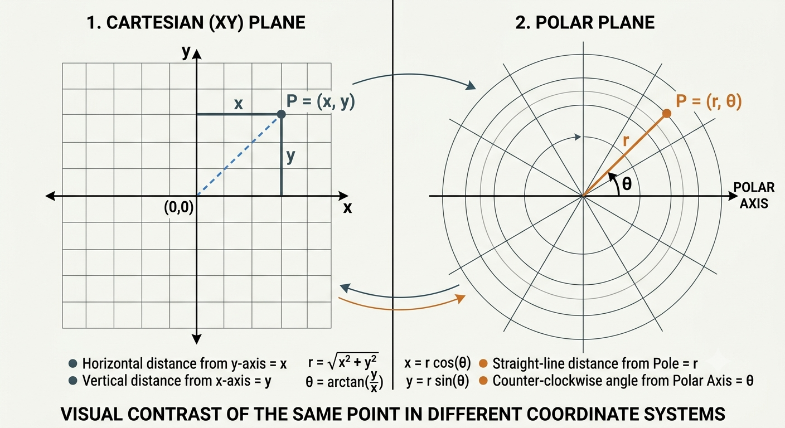
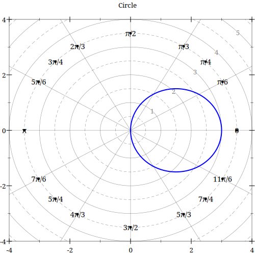
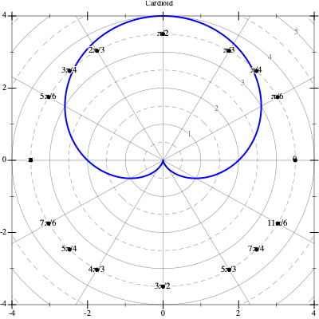
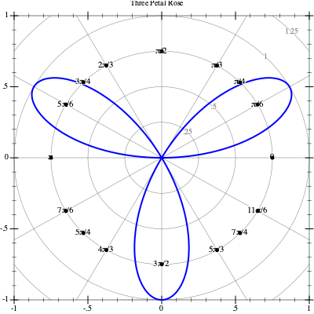
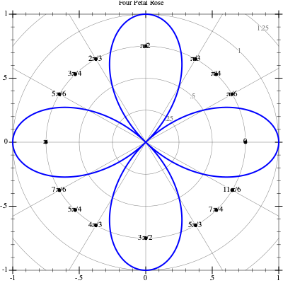
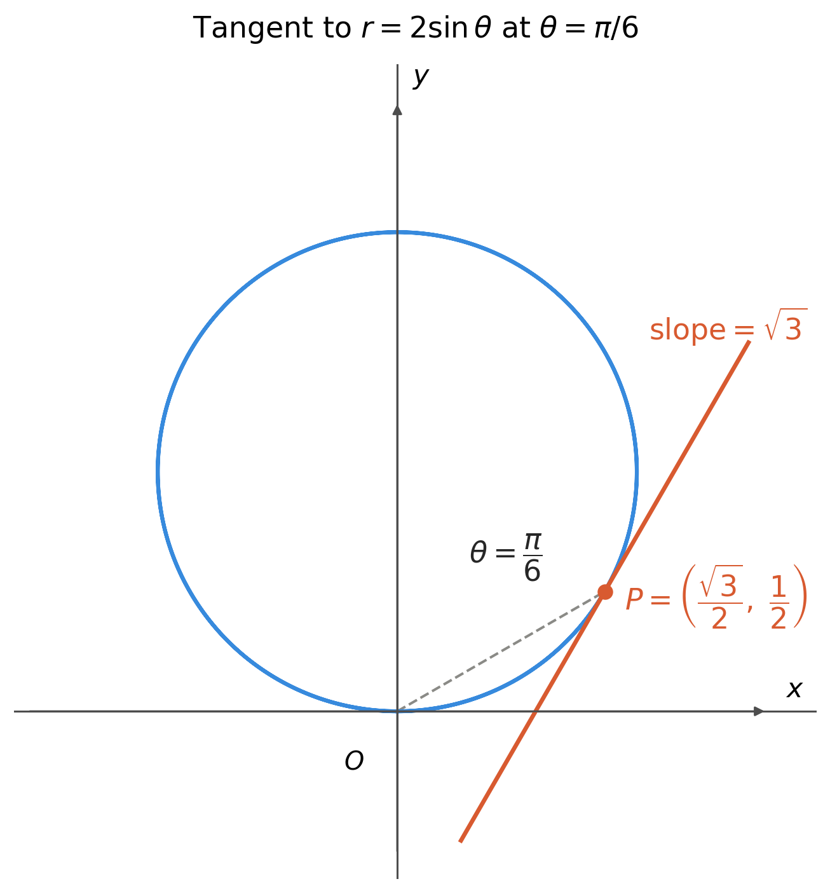
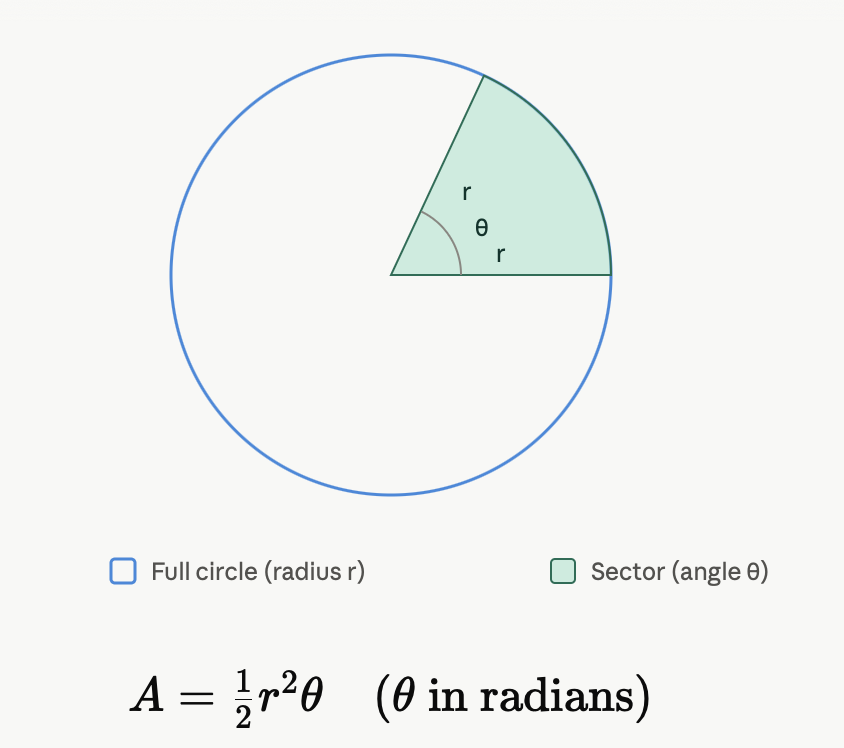
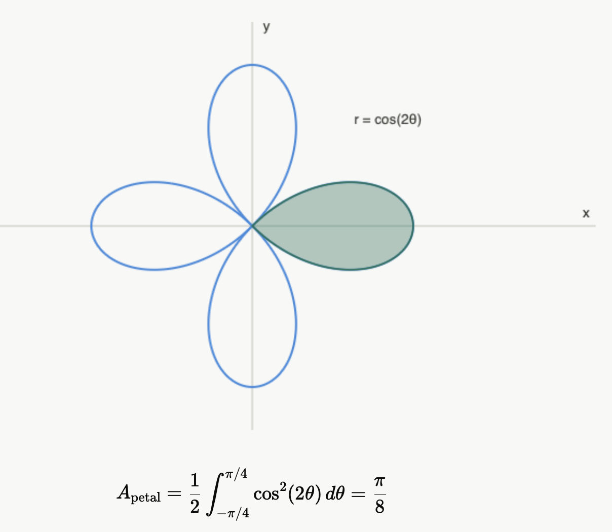
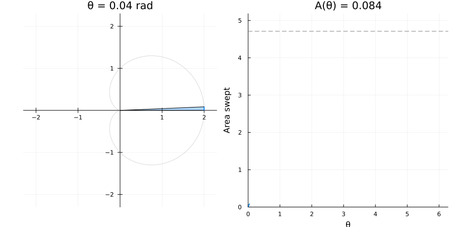

Polar Curves
1 Cartesian & Polar Coordinates

2 Transformations
Example 1: Cartesian to Polar
Convert x^2 + y^2 = 1 to polar coordinates.
Using the substitutions x = r \cos \theta and y = r\sin\theta
\begin{align*} x^2 + y^2 &= 1 \\ (r\cos\theta)^2 + (r\sin\theta)^2 &= 1 \\ r^2\cos^2\theta + r^2\sin^2\theta &= 1 \\ r^2(\cos^2\theta + \sin^2\theta) &= 1 \\ r^2(1) &= 1 \\ r^2 &= 1 \\ r &= 1 \end{align*}
So the unit circle x^2+y^2=1 corresponds simply to r = 1 in polar coordinates.
Example 2: Polar to Cartesian
Convert r = \sin\theta to Cartesian coordinates.
Multiply both sides by r:
\begin{align*} r &= \sin\theta \\ r^2 &= r\sin\theta \end{align*}
Now use r^2 = x^2+y^2 and y = r\sin\theta: \begin{align*} x^2 + y^2 &= y \end{align*}
Complete the square in y: \begin{align*} x^2 + y^2 - y &= 0 \\ x^2 + \left(y - \tfrac{1}{2}\right)^2 &= \tfrac{1}{4} \end{align*}
This is a circle of radius \tfrac{1}{2} centered at \left(0, \tfrac{1}{2}\right).
3 Circle
Here’s a circle r = 3\cos\theta traced in the plane:

4 Cardioid
Here’s a cardioid r = 1 + 2\sin\theta traced in the plane:

5 limaçon
Here’s a limaçon r = 2 + \sin\theta traced in the plane:

6 Roses
Here’s a three petal rose r = \sin 3\theta traced in the plane:

Here’s a four petal rose r = \cos 2\theta traced in the plane:

7 Slope of the tangent line
The slope of the tangent is defined by m = \frac{dy}{dx}. We can get a formula given that r = f(\theta) then x = f(\theta) \cos \theta and y = f(\theta)\sin \theta. By the product rule \begin{align*} \frac{dy}{dx}&=\frac {\frac{dy}{d\theta}} {\frac{dx}{d\theta}}\\ &=\frac{f{}’(\theta) \sin \theta + f(\theta) \cos \theta} {f{}’(\theta) \cos \theta - f(\theta) \sin \theta} \\ &=\frac{\frac{dr}{d\theta} \sin \theta + r\cos \theta} {\frac{dr}{d\theta} \cos \theta - r\sin \theta} \end{align*} The other option is to solve for r from the given equation and substitute it at the general expressions x=r\cos \theta and y=r\sin \theta. The next example can be very useful.
Example
Finding the slope of the tangent to r = 2\sin\theta when \theta = \pi/6 and find the coordinates of the tangency point
Step 1: Substitute r = 2\sin\theta in x = r\cos\theta and y = r\sin\theta
\begin{align*} x &= 2\sin\theta\cos\theta = \sin 2\theta \\ y &= 2\sin^2\theta \end{align*}
Step 2: Differentiate with respect to \theta
\begin{align*} \frac{dx}{d\theta} &= 2\cos 2\theta \\ \frac{dy}{d\theta} &= 4\sin\theta\cos\theta = 2\sin 2\theta \end{align*}
Step 3: Apply the polar tangent-slope formula
\begin{align*} \frac{dy}{dx} = \frac{dy/d\theta}{dx/d\theta} = \frac{2\sin 2\theta}{2\cos 2\theta} = \tan 2\theta \end{align*}
Step 4: Evaluate at \theta = \frac{\pi}{6} \begin{align*} \left.\frac{dy}{dx}\right|_{\theta = \pi/6} = \tan\left(\frac{\pi}{3}\right) = \sqrt{3} \end{align*}
Step 5: Point of tangency \begin{align*} r &= 2\sin\left(\frac{\pi}{6}\right) = 1 \\ x &= \cos\left(\frac{\pi}{6}\right) = \frac{\sqrt{3}}{2}, \qquad y = \sin\left(\frac{\pi}{6}\right) = \frac{1}{2} \end{align*}
The tangent line at \left(\frac{\sqrt{3}}{2}, \frac{1}{2}\right) has slope \sqrt{3}.

8 Area of a polar equation

The formula for finding the area on a polar equations is based on how do you find the area of a sector. A = \frac{1}{2} \int_a^b r^2 ~d\theta
Example
Area of one petal of r = \cos(2\theta)
Step 1: Find the bounds of one petal
The petal along the positive x-axis is traced where r \geq 0. Solve \cos(2\theta) = 0:
\begin{align*} 2\theta &= \pm\frac{\pi}{2} \\ \theta &= \pm\frac{\pi}{4} \end{align*}
So one full petal corresponds to \theta \in \left[-\frac{\pi}{4}, \frac{\pi}{4}\right].
Step 2: Set up the polar area integral
\begin{align*} A &= \frac{1}{2}\int_{-\pi/4}^{\pi/4} r^2 \, d\theta &= \frac{1}{2}\int_{-\pi/4}^{\pi/4} \cos^2(2\theta) \, d\theta \end{align*}
Step 3: Apply the power-reduction identity
\cos^2(2\theta) = \frac{1 + \cos(4\theta)}{2}
\begin{align*} A &= \frac{1}{2}\int_{-\pi/4}^{\pi/4} \frac{1 + \cos(4\theta)}{2} \, d\theta \\ &= \frac{1}{4}\int_{-\pi/4}^{\pi/4} \big(1 + \cos(4\theta)\big) \, d\theta \end{align*}
Step 4: Integrate
A = \frac{1}{4}\left[\theta + \frac{\sin(4\theta)}{4}\right]_{-\pi/4}^{\pi/4}
Step 5: Evaluate at the bounds
At \theta = \frac{\pi}{4}: \quad \frac{\pi}{4} + \frac{\sin(\pi)}{4} = \frac{\pi}{4} + 0 = \frac{\pi}{4}
At \theta = -\frac{\pi}{4}: \quad -\frac{\pi}{4} + \frac{\sin(-\pi)}{4} = -\frac{\pi}{4} - 0 = -\frac{\pi}{4}
A = \frac{1}{4}\left(\frac{\pi}{4} - \left(-\frac{\pi}{4}\right)\right) = \frac{1}{4}\cdot\frac{\pi}{2} = \frac{\pi}{8}
Result
A_{\text{petal}} = \frac{\pi}{8}

Example 2
Area inside a cardioid r = 1+\cos\theta
Step 1: Find the bounds
So the whole area corresponds to \theta \in \left[0, 2\pi\right].
Step 2: Set up the polar area integral
\begin{align*} A &= \frac{1}{2}\int_{0}^{2\pi} r^2 \, d\theta &= \frac{1}{2}\int_{0}^{2\pi} (1+\cos\theta)^2 \, d\theta &= \frac{1}{2}\int_{0}^{2\pi} (1+2\cos\theta + \cos^2 \theta) \, d\theta \end{align*}
Step 3: Apply the power-reduction identity
\cos^2(\theta) = \frac{1 + \cos(2\theta)}{2}
\begin{align*} A&= \frac{1}{2}\int_{0}^{2\pi} (1+2\cos\theta + \frac{1 + \cos(2\theta)}{2}) \, d\theta &= \frac{1}{2}\int_{0}^{2\pi} (\frac{3}{2}+2\cos\theta + \frac{1}{2}\cos(2\theta)) \, d\theta \end{align*}
Step 4: Integrate
\begin{align*} A &= \frac{1}{2}\int_{0}^{2\pi} \left(\frac{3}{2}+2\cos\theta + \frac{1}{2}\cos(2\theta)\right) d\theta \\[2mm] &= \frac{1}{2}\left[\int_{0}^{2\pi} \frac{3}{2}\, d\theta + \int_{0}^{2\pi} 2\cos\theta \, d\theta + \int_{0}^{2\pi} \frac{1}{2}\cos(2\theta)\, d\theta\right] \\[2mm] &= \frac{1}{2}\left[\frac{3}{2}\int_{0}^{2\pi} d\theta + 2\int_{0}^{2\pi} \cos\theta \, d\theta + \frac{1}{2}\int_{0}^{2\pi} \cos(2\theta)\, d\theta\right] \end{align*}
Evaluate each integral separately: \begin{align*} \int_{0}^{2\pi} d\theta &= \Big[\theta\Big]_0^{2\pi} = 2\pi \\[2mm] \int_{0}^{2\pi} \cos\theta \, d\theta &= \Big[\sin\theta\Big]_0^{2\pi} = \sin(2\pi) - \sin(0) = 0 \\[2mm] \int_{0}^{2\pi} \cos(2\theta) \, d\theta &= \left[\frac{1}{2}\sin(2\theta)\right]_0^{2\pi} = \frac{1}{2}\big(\sin(4\pi) - \sin(0)\big) = 0 \end{align*}
Substitute back:
\begin{align*} A &= \frac{1}{2}\left[\frac{3}{2}(2\pi) + 2(0) + \frac{1}{2}(0)\right] \\[2mm] &= \frac{1}{2}\left[3\pi + 0 + 0\right] \\[2mm] &= \frac{1}{2}(3\pi) \\[2mm] &= \boxed{\dfrac{3\pi}{2}} \end{align*}
Result:
The area of the cardioid is A =\dfrac{3\pi}{2}
Animation

9 Practice your skills
On graphing limaçons Graphing a limaçon
Finding the slope of the tangent line
Finding the area of a polar equation